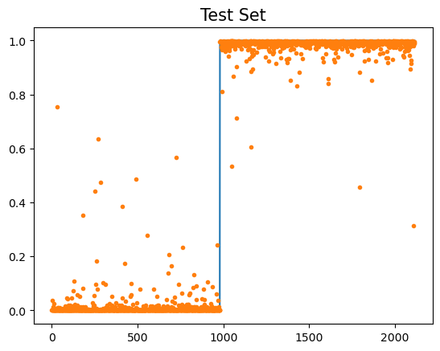
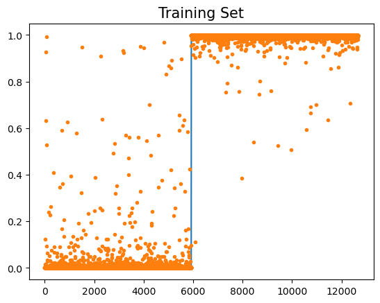
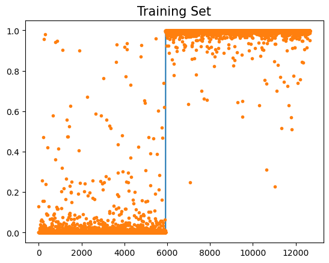

import torch
import matplotlib.pyplot as plt
from fastai.data.all import *
import torchvision05wk-2: 합성곱신경망 (1)

1. 강의영상
2. Imports
3. Data: MNIST
- download data
path = untar_data(URLs.MNIST)- training set
X0 = torch.stack([torchvision.io.read_image(str(fname)) for fname in (path/'training/0').ls()])
X1 = torch.stack([torchvision.io.read_image(str(fname)) for fname in (path/'training/1').ls()])
X = torch.concat([X0,X1])/255
y = torch.tensor([0.0]*len(X0) + [1.0]*len(X1)).reshape(-1,1)- test set
X0 = torch.stack([torchvision.io.read_image(str(fname)) for fname in (path/'testing/0').ls()])
X1 = torch.stack([torchvision.io.read_image(str(fname)) for fname in (path/'testing/1').ls()])
XX = torch.concat([X0,X1])/255
yy = torch.tensor([0.0]*len(X0) + [1.0]*len(X1)).reshape(-1,1)X.shape,XX.shape,y.shape,yy.shape(torch.Size([12665, 1, 28, 28]),
torch.Size([2115, 1, 28, 28]),
torch.Size([12665, 1]),
torch.Size([2115, 1]))4. CNN 예비학습
A. 기존모형에 대한 불만

- 왜 28 \(\times\) 28 이미지를 784개의 벡터로 만든 다음에 모형을 돌려야 하는가?
- 기존에 개발된 모형이 회귀분석 기반으로 되어있어서 결국 회귀분석 틀에 짜 맞추어서 이미지자료를 분석하는 느낌
- observation의 차원은 \(784\)가 아니라 \(1\times (28\times 28)\)이 되어야 맞다.
B. 새로운 아키텍처의 제시
- 예전 아키텍처들
- \(\underset{(n,1)}{\bf X} \overset{l_1}{\to} \underset{(n,2)}{\boldsymbol u^{(1)}} \overset{relu}{\to} \underset{(n,2)}{\boldsymbol v^{(1)}} \overset{l_1}{\to} \underset{(n,1)}{\boldsymbol u^{(2)}} \overset{sig}{\to} \underset{(n,1)}{\boldsymbol v^{(2)}}=\underset{(n,1)}{\hat{\boldsymbol y}}\)
- \(\underset{(n,1)}{\bf X} \overset{l_1}{\to} \underset{(n,256)}{\boldsymbol u^{(1)}} \overset{relu}{\to} \underset{(n,256)}{\boldsymbol v^{(1)}} \overset{l_1}{\to} \underset{(n,1)}{\boldsymbol u^{(2)}} \overset{sig}{\to} \underset{(n,1)}{\boldsymbol v^{(2)}}=\underset{(n,1)}{\hat{\boldsymbol y}}\)
- \(\underset{(n,784)}{\bf X} \overset{l_1}{\to} \underset{(n,30)}{\boldsymbol u^{(1)}} \overset{relu}{\to} \underset{(n,30)}{\boldsymbol v^{(1)}} \overset{l_2}{\to} \underset{(n,1)}{\boldsymbol u^{(2)}} \overset{sig}{\to} \underset{(n,1)}{\boldsymbol v^{(2)}}=\underset{(n,1)}{\hat{\boldsymbol y}}\)
- 아키텍처들의 공통점?
- \(l_1\): 선형변환, feature를 뽑아내는 역할 (뻥튀기 혹은 요약)
- \(relu\): 뻥튀기된 feature에 비선형을 추가하여 표현력 극대화
- \(l_2\): 선형변환, 뻥튀기된 feature를 요약 하는 역할 (=데이터를 요약하는 역할)
- 새로운 아키텍처
- \(conv\): feature를 뽑아내는 역할 (뻥튀기 혹은 요약) (2d ver \(l_1\) 느낌)
- \(relu\):
- \(pooling\): 데이터를 요약하는 역할
C. torch.nn.Conv2d
- 우선 연산하는 방법만 살펴보자.
(예시1)
torch.manual_seed(43052)
conv = torch.nn.Conv2d(1,1,(2,2)) # 입력1, 출력1, (2,2) window size
conv.weight.data, conv.bias.data(tensor([[[[-0.1733, -0.4235],
[ 0.1802, 0.4668]]]]),
tensor([0.2037]))_X = torch.arange(0,4).reshape(1,1,2,2).float() # 2,2 흑백이미지.
_Xtensor([[[[0., 1.],
[2., 3.]]]])(-0.1733)*0 + (-0.4235)*1 +\
(0.1802)*2 + (0.4668)*3 + 0.20371.541conv(_X)tensor([[[[1.5410]]]], grad_fn=<ConvolutionBackward0>)(예시2) 평균
conv = torch.nn.Conv2d(1,1,(2,2))
conv.weight.data = conv.weight.data * 0 + 1/4
conv.bias.data = conv.bias.data * 0_Xtensor([[[[0., 1.],
[2., 3.]]]])conv(_X)tensor([[[[1.5000]]]], grad_fn=<ConvolutionBackward0>)(예시3) 이동평균?
_X = torch.arange(16).reshape(1,1,4,4).float()
_X,conv(_X)(tensor([[[[ 0., 1., 2., 3.],
[ 4., 5., 6., 7.],
[ 8., 9., 10., 11.],
[12., 13., 14., 15.]]]]),
tensor([[[[ 2.5000, 3.5000, 4.5000],
[ 6.5000, 7.5000, 8.5000],
[10.5000, 11.5000, 12.5000]]]], grad_fn=<ConvolutionBackward0>))(예시4) window size가 증가한다면? (2d의 이동평균느낌)
_X = torch.arange(16).reshape(1,1,4,4).float()
conv = torch.nn.Conv2d(1,1,(3,3))
conv.weight.data = conv.weight.data * 0 + 1/9
conv.bias.data = conv.bias.data * 0_X,conv(_X)(tensor([[[[ 0., 1., 2., 3.],
[ 4., 5., 6., 7.],
[ 8., 9., 10., 11.],
[12., 13., 14., 15.]]]]),
tensor([[[[ 5.0000, 6.0000],
[ 9.0000, 10.0000]]]], grad_fn=<ConvolutionBackward0>))(예시5) 2개의 이미지
_X = torch.arange(32).reshape(2,1,4,4).float()
conv = torch.nn.Conv2d(1,1,(3,3))
conv.weight.data = conv.weight.data * 0 + 1/9
conv.bias.data = conv.bias.data * 0_X,conv(_X)(tensor([[[[ 0., 1., 2., 3.],
[ 4., 5., 6., 7.],
[ 8., 9., 10., 11.],
[12., 13., 14., 15.]]],
[[[16., 17., 18., 19.],
[20., 21., 22., 23.],
[24., 25., 26., 27.],
[28., 29., 30., 31.]]]]),
tensor([[[[ 5.0000, 6.0000],
[ 9.0000, 10.0000]]],
[[[21.0000, 22.0000],
[25.0000, 26.0000]]]], grad_fn=<ConvolutionBackward0>))(예시6) 피처뻥튀기
_X = torch.arange(32).reshape(2,1,4,4).float()
conv = torch.nn.Conv2d(1,16,(3,3))_X.shape,conv(_X).shape(torch.Size([2, 1, 4, 4]), torch.Size([2, 16, 2, 2]))D. torch.nn.ReLU
a1 = torch.nn.ReLU()
_X = torch.randn(25).reshape(1,1,5,5)
_X,a1(_X)(tensor([[[[-0.2818, -1.1458, 1.8352, 1.8220, 0.2402],
[ 0.2336, -0.3763, -0.2860, 1.3095, 0.1935],
[ 2.2810, -0.0667, -1.0980, -0.8768, -1.2860],
[-2.0301, 2.0058, -1.4996, -2.3721, -0.2790],
[ 0.5234, -2.3032, 0.3850, 0.3517, -0.7517]]]]),
tensor([[[[0.0000, 0.0000, 1.8352, 1.8220, 0.2402],
[0.2336, 0.0000, 0.0000, 1.3095, 0.1935],
[2.2810, 0.0000, 0.0000, 0.0000, 0.0000],
[0.0000, 2.0058, 0.0000, 0.0000, 0.0000],
[0.5234, 0.0000, 0.3850, 0.3517, 0.0000]]]]))E. torch.nn.MaxPool2d
m1 = torch.nn.MaxPool2d((2,2))
_X = torch.randn(25).reshape(1,1,5,5)
_X,m1(_X)(tensor([[[[ 0.0766, -1.5961, 1.3616, -1.0197, 1.7961],
[ 1.0320, -1.4307, 1.5249, 0.5566, 0.4670],
[-1.2974, -0.0475, 0.0949, -0.5826, -0.2989],
[-1.6870, 0.0900, -0.2950, 1.1790, 0.5042],
[-1.7903, 0.8574, -1.2283, 0.6094, 0.0668]]]]),
tensor([[[[1.0320, 1.5249],
[0.0900, 1.1790]]]]))5. MNIST(CPU)
X.shapetorch.Size([12665, 1, 28, 28])A. Conv2d
c1 = torch.nn.Conv2d(1,16,(5,5))
print(X.shape)
print(c1(X).shape)torch.Size([12665, 1, 28, 28])
torch.Size([12665, 16, 24, 24])B. ReLU
a1 = torch.nn.ReLU()
print(X.shape)
print(c1(X).shape)
print(a1(c1(X)).shape)torch.Size([12665, 1, 28, 28])
torch.Size([12665, 16, 24, 24])
torch.Size([12665, 16, 24, 24])C. MaxPool2D
m1 = torch.nn.MaxPool2d((2,2))
print(X.shape)
print(c1(X).shape)
print(a1(c1(X)).shape)
print(m1(a1(c1(X))).shape)torch.Size([12665, 1, 28, 28])
torch.Size([12665, 16, 24, 24])
torch.Size([12665, 16, 24, 24])
torch.Size([12665, 16, 12, 12])D. 적당히 마무리하고 시그모이드 태우자
- 펼치자.
(방법1)
m1(a1(c1(X))).reshape(-1,16*12*12).shapetorch.Size([12665, 2304])(방법2)
flttn = torch.nn.Flatten()print(X.shape)
print(c1(X).shape)
print(a1(c1(X)).shape)
print(m1(a1(c1(X))).shape)
print(flttn(m1(a1(c1(X)))).shape)torch.Size([12665, 1, 28, 28])
torch.Size([12665, 16, 24, 24])
torch.Size([12665, 16, 24, 24])
torch.Size([12665, 16, 12, 12])
torch.Size([12665, 2304])- 2304 \(\to\) 1 로 차원축소하는 선형레이어를 설계
l1 = torch.nn.Linear(in_features=2304,out_features=1)
print(X.shape)
print(c1(X).shape)
print(a1(c1(X)).shape)
print(m1(a1(c1(X))).shape)
print(flttn(m1(a1(c1(X)))).shape)
print(l1(flttn(m1(a1(c1(X))))).shape)torch.Size([12665, 1, 28, 28])
torch.Size([12665, 16, 24, 24])
torch.Size([12665, 16, 24, 24])
torch.Size([12665, 16, 12, 12])
torch.Size([12665, 2304])
torch.Size([12665, 1])- 시그모이드
a2 = torch.nn.Sigmoid()l1 = torch.nn.Linear(in_features=2304,out_features=1)
print(X.shape)
print(c1(X).shape)
print(a1(c1(X)).shape)
print(m1(a1(c1(X))).shape)
print(flttn(m1(a1(c1(X)))).shape)
print(l1(flttn(m1(a1(c1(X))))).shape)
print(a2(l1(flttn(m1(a1(c1(X)))))).shape)torch.Size([12665, 1, 28, 28])
torch.Size([12665, 16, 24, 24])
torch.Size([12665, 16, 24, 24])
torch.Size([12665, 16, 12, 12])
torch.Size([12665, 2304])
torch.Size([12665, 1])
torch.Size([12665, 1])E. 학습
- 네트워크 설계
net = torch.nn.Sequential(
c1, # 2d: 컨볼루션(선형변환), 피처 뻥튀기
a1, # 2d: 렐루(비선형변환)
m1, # 2d: 맥스풀링: 데이터요약
flttn, # 2d->1d
l1, # 1d: 선형변환
a2 # 1d: 시그모이드(비선형변환)
)
loss_fn = torch.nn.BCELoss()
optimizr = torch.optim.Adam(net.parameters())
for epoc in range(50):
## 1
yhat = net(X)
## 2
loss = loss_fn(yhat,y)
## 3
loss.backward()
## 4
optimizr.step()
optimizr.zero_grad()plt.plot(y)
plt.plot(net(X).data,'.')
plt.title('Traning Set',size=15)Text(0.5, 1.0, 'Traning Set')
plt.plot(yy)
plt.plot(net(XX).data,'.')
plt.title('Test Set',size=15)Text(0.5, 1.0, 'Test Set')
6. MNIST (GPU)
ds = torch.utils.data.TensorDataset(X,y)
dl = torch.utils.data.DataLoader(ds,batch_size=128)
#--#
net = torch.nn.Sequential(
torch.nn.Conv2d(1,16,(5,5)),
torch.nn.ReLU(),
torch.nn.MaxPool2d((2,2)),
torch.nn.Flatten(),
torch.nn.Linear(2304,1),
torch.nn.Sigmoid()
)
loss_fn = torch.nn.BCELoss()
optimizr = torch.optim.Adam(net.parameters())
#--#
net.to("cuda:0")
for epoc in range(5):
for xi,yi in dl:
## 1
netout = net(xi.to("cuda:0"))
## 2
loss = loss_fn(netout,yi.to("cuda:0"))
## 3
loss.backward()
## 4
optimizr.step()
optimizr.zero_grad()net.to("cpu")
plt.plot(y)
plt.plot(net(X).data,'.')
plt.title("Training Set",size=15)Text(0.5, 1.0, 'Training Set')
#net.to("cpu")
plt.plot(yy)
plt.plot(net(XX).data,'.')
plt.title("Test Set",size=15)Text(0.5, 1.0, 'Test Set')